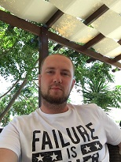

Oleg Makarychev
Junior Frontend Developer
Contact information:
Address: Russia Syzran
✆ :8(927)028-25-04
🖂: Flashholio@mail.ru
Telegram: @Flashholio
About me
Hi! My name is Oleg and I am a Junior Java Developer. I know how to make a very good product. I will do my best to make my project meet all the requirements of the customer and even a little more :-). I am purposeful, I always achieve what I want. I am able to quickly master new areas of knowledge, persistent, always achieve my goals, hardworking and responsible. I have a clear organization of work and working hours. Sociable. I feel great when working in a team.